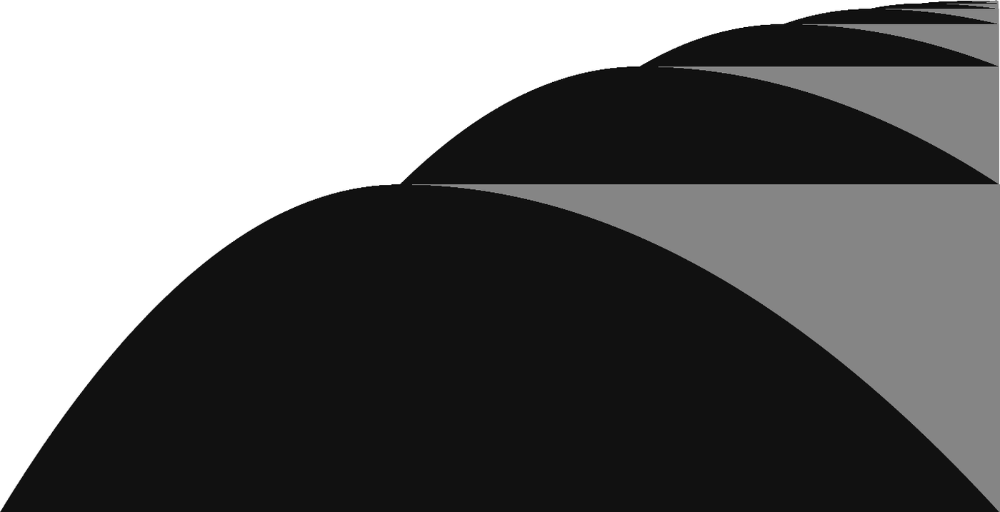
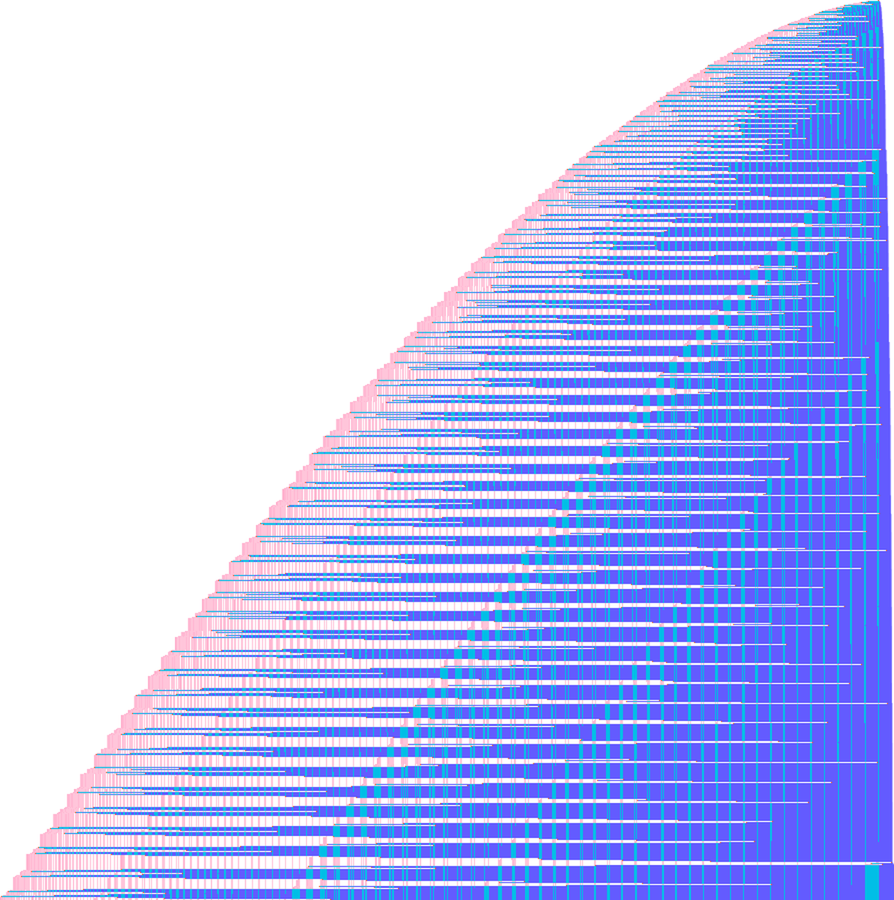
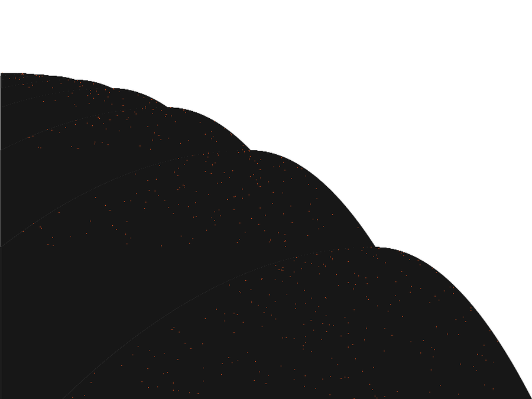
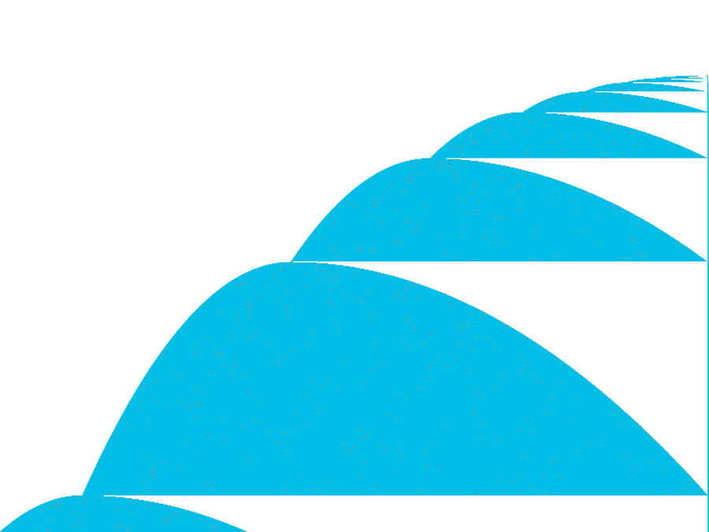
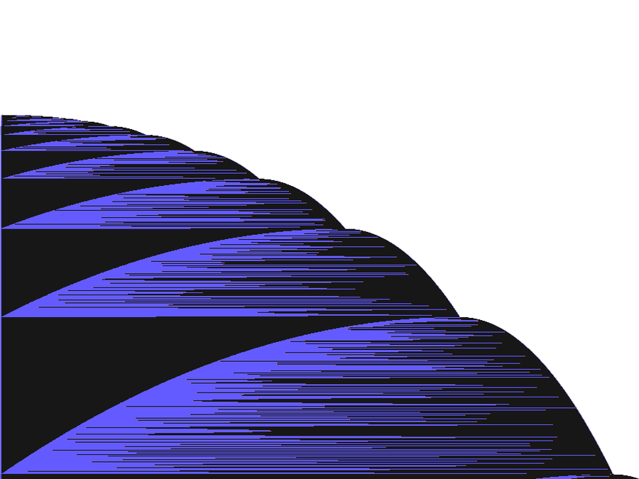

시안 AVercel · Rauno — 흰 바탕에 강한 검은 형태 하나
규칙 몇 줄짜리 튜링 기계가 멈추기 전까지 걸을 수 있는 최대 걸음 수, Busy Beaver를 직접 돌려 보며 알아봅니다.

시안 BStripe — 화려한 그림 하나가 화면 밖으로 넘침

● BB(5) = 47,176,870 · 2024년 증명 완료
규칙 몇 줄짜리 튜링 기계가 멈추기 전까지 걸을 수 있는 최대 걸음 수, Busy Beaver를 직접 돌려 보며 알아봅니다.
섹션 예시Anthropic 연구 글 — 큰 제목, 한 문장 설명, 그림 중심 카드
04 — 크립티드
몇몇 작은 기계는 분석해 보면 콜라츠 문제 같은 수학 난제로 바뀝니다. 이런 기계가 하나라도 있으면, 그 영역의 Busy Beaver 값은 그 난제를 풀기 전까지 확정할 수 없어요.

⌊3n/2⌋+2를 되풀이하며 홀짝을 세는 기계. 2024년 6월 발견.
1RB1RA_0LC1LE_1LD1LC_1LA0LB_1LF1RE_---0RA
Antihydra의 원조. 상태 2개, 기호 5개로 같은 종류의 난제를 품고 있어요.
1RB3RB---3LA1RA_2LA3RA4LB0LB0LA
이 기계 때문에 BB(3,3)을 끝내려면 수학 난제 하나를 먼저 풀어야 해요.
1RB2RA1LC_2LC1RB2RB_---2LA1LA그림: 각 기계의 3천만 걸음. 위에서 아래로 시간, 가로는 테이프.직접 돌려 보기 →